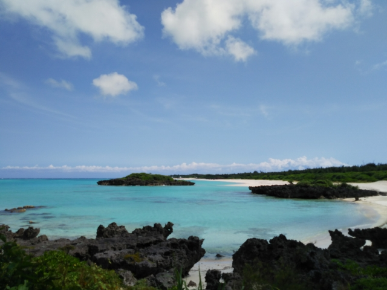
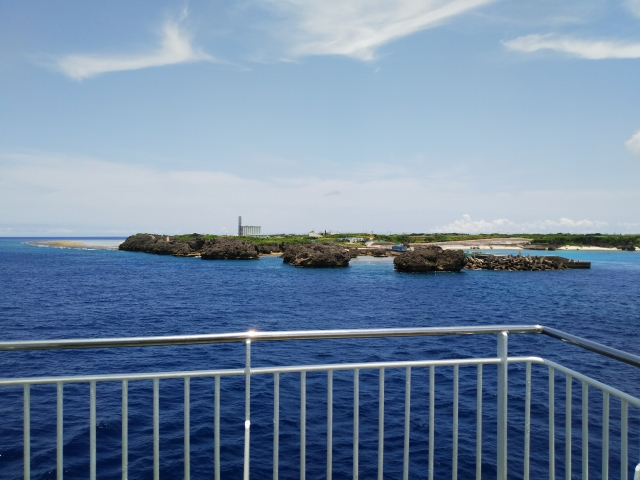

2022（R4） 7月9～15日 リフレッシュ休暇の旅
とうとう勤続３０年のリフレッシュ休暇、海外旅行も見据えてワクチンの３回目接種したものの、結局は国内旅行ということに・・・
朝の清荒神駅。
今回は、珍しく飛行機で移動です。神戸空港に向か
います。
もちろん、乗るのは格安系のスカイマーク。
ＬＣＣと違って、シートピッチもそれほど狭くない
ので好きです。
ちょうど海上にはさんふらわぁが通ってます。
鹿児島空港に到着。着陸直前に急上昇して着陸やり
直したのにはビックリしました。
（今思えば、今回の旅の波乱を予感させるオープニン
グやったわ）
今日はバスで霧島の温泉めぐりといきます。
お得な一日券があるので、それをゲットして乗りこ
みます。
まずは塩浸温泉へ。
日本初の新婚旅行と言われてる、坂本竜馬が妻と二
人で滞在したことで有名ですね。
昨日かなり雨が降ったみたいで、川はかなり増水し
てます。奥の方には温泉の建物が。
公園になっていて、竜馬の銅像もあるんですが、立
ち入り禁止て・・・。
お金を払って温泉へ。
１２年前に建ったと書いてるけど、そんな最近では
ないようなくたびれた建物です。
先客はおらず、独り占めできて最高っす。
湯加減もちょうど良かったっす。
ちなみに昔は温泉宿がこのあたりに沢山あったみた
いです。
当時の風呂が河原に残ってますが、立ち入り禁止で
した。残念。

バスで次の目的地へ。
今日のメインの温泉の最寄のバス停に到着。
後ろに写ってる建物が霧島ホテルで、そこの温泉で
す。
バス停からちょっと離れているので、電話したらホテルから迎えに来
てくれます。
さっそく電話したら・・・「工事中で入れません」
どーゆーことやねん！ホームページに書いてますって言いよるから確
認したら、確かにクリックしていった先には書いとるけど、それもお
とといまでって書いとるがな！
って、ごねてもしゃーないので（ごねてないで）泣く泣くあきらめま
した。
このまま終わるのも悔しいので、代わりに妙見温泉に向かうことに。
こーゆー時に一日券は助かりますわ。
温泉街はけっこう寂れてます。
新婚旅行はこの近くの高級宿でしたが、ここまでは
来たことなかったわ。
一番有名な、田島本館に行ってみます。
予想に反して、ちょっとポップな感じやなぁ。
しかし、中はええ感じでした。
近くやから当然ですが、泉質は塩浸温泉とほぼ同じ。
飲泉もあったからなめてみたけど、かなり濃いめの
味でした。
霧島の温泉めぐりはここまでとして、次の目的地に向かいます。
バスの終点、隼人駅に到着。ここから鹿児島へ向か
います。
しか～し！ここで大問題がっ！
なんと、昨夜の大雨でＪＲが運行中止！なめてんの
かＪＲ九州！保守費用けちって不動産業ばっかり注
力しとるからこんなことになるんやろが！今日は一
日快晴やで。この時間まで動いてへんて、どーゆー
ことやねん・・・
結構パニックでしたが、空港経由で鹿児島市内に行
けることに気づきました。
さっき乗って来たバスが、折り返しで空港にいくこ
とがわかってひと安心。
途中、嘉例川駅にもよりました。（鉄オタ向けのサ
－ビスショットっす）
空港から鹿児島市内行きのバスに無事乗りこみまし
た。
桜島がキレイに見えてます。
鹿児島中央からは、今回数少ない鉄道移動です。
指宿枕崎線で谷山まで移動します。
ローカル駅やのに、なんと高架。
交換列車は国鉄型でした。
ここから、近くのレンタルバイク店まで行って原付
を借ります。
駅前からもきれいに桜島が見えました。
で、原付を借りて、伊作街道を西に向かいました。
伊作に到着。
そう、ここは昭和５９年３月に廃止になった鹿児島
交通の伊作駅のあったところです。
伊集院と枕崎を結んでいた路線の途中駅ですね。
なんと、すごいタイミングで枕崎行のバスがやって
きました。
北海道の三菱石炭鉱業大夕張鉄道線と並んで、是非
とも行ってみたくて何度も時刻表とにらめっこした
路線です。結局予算不足で、行くことなく廃止にな
ってしまいました・・・。
そのまま西に行って、吹上浜に到着。日本三大砂丘
のひとつとか。
今日はここまで。
近くの国民宿舎に宿泊します。
上皇が皇太子時代に宿泊した写真が飾ってたけど、
そんな方がお泊りになったとは思えないような、普
通の国民宿舎でした。
翌日は、夜明けとともに出発です。
しかし鹿児島オリジナルのナンバープレート、桜島
が大噴火してるがな。強烈。
ちょっとした地域の名所、浜田橋。
石造りの橋が残っていて、その横には鹿児島交通の
橋脚も残ってます。
海沿いを黙々と北上して行きます。バイク移動は途
中の景色の写真を撮りづらいのが玉にキズ。海沿い
のシラス台地は関西では見られない珍しい風景でし
た。
川内川の河口付近は霧に包まれてました。
薩摩高城駅で朝食。ちょうどおれんじ鉄道の列車が
やってきました。
出水あたりまで北上して、９：３０頃にようやく最
初の目的地の白木川内温泉に到着。
やってんのか？というボロさで、受付の人もおらず
不安になりましたが、お金を入れる箱があったので
２００円入れました。ほんまは１５０円やったのに
５０円玉がなく・・・
先客はおらず、独り占め。狭い風呂だったので助かりました。
底から自噴する最高の温泉でした。それほど熱くなく、透明なきれい
なお湯です。いいぬめりもあってかなり良いです。
見てのとおり、隣の女風呂とはつながってるので、潜ったら隣に簡単
に行けます。って、行かへんで。
ただ、光が入ってくるのは羨ましい・・・

３０分ほど走って、次の目的地の湯川内温泉へ。
数年前に宿泊の予約を入れたら、直前の台風で休館
になってしまいました。その後、日帰り温泉だけ復
活してくれました。
ここが温泉かな？
少し登った奥にも温泉が。
こっちのほうが古そうなので、こっちに入りました。
お湯は白木川内とほぼ同じ。こちらも自噴タイプで
白木川内よりやや熱かったです。
こんな感じ
さらに１時間走って、紫尾温泉へ。
「神様の湯」って大袈裟な！でも、この奥に神社が
あって、ちょうど賽銭箱の下あたりからお湯がわい
てるとのことで、あながち大袈裟でもないか。
ここはちょっと熱いお湯でした。湯ノ花が黒いのは
珍しいっす。
さて、温泉めぐりはここまで。あとは鹿児島市内に
戻るだけなんですが、途中に鉄スポットがあったの
で、ちょっと寄り道してみました。
宮之城線の樋脇駅です。
旧樋脇駅跡鉄道記念公園となっていて、駅舎とホー
ムが残ってます。
あとは黙々と市内に戻ります。
無事、時間内に返却して、歩いて市電の終点の谷山
駅へ。
「日本最南端の電停」だそうです。
さぁ、ここまではこの旅の「前座」です。ここから
が、いよいよメインとなります。
市電に乗って、鹿児島新港から２０時間の船旅とな
ります。
しかし、疲れからか、ちょっと腹痛が・・・
元々、最寄駅から２０分ほど歩いて港まで行こうと思ってたのですが、暑
いし腹も痛いので、騎射場の電停で下車しました。
この近くにタクシーの営業所があるというので、ここは奮発してタクシー
移動といきますか・・・と思ったら！
なんと、エンジンがかかったタクシーは止まってるのに人の気配なし！電
話したら、「今は無理です～」って。時間迫ってるっちゅうのに、どない
せぇっちゅうねん！
他のタクシー会社に電話してもつながらず、大通りに戻っても流しのタク
シーは見当たらず・・・。すでに市電に乗って最寄駅から歩いても間に合
わん時間になってて、顔面蒼白状態。
フェリー会社に電話して事情話しても、出航１５分前までしま待てません
と、まぁ当たり前の反応。
もう７割がた、諦めの境地で腹痛を感じつつ腑抜けのように騎射場の電停
で立ってると・・・
来た！来ましたよ流しのタクシーがっ！！ 神様に見えましたよ。ホンマ。
生き返った気持ちで乗りこんで、急いで港に向かってもらいました。
話てると、運転手さんは去年行った沖永良部のご出身とのこと。
港について、「おつりはいいっすよ！」と大盤振る舞い（ちゅーても、数
百円多いぐらいやけど）
窓口に駆け込んで、なんとか与論までの往復の切符
を購入して無事乗りこみました。
そうです、今回の旅の最大の目的地は与論島で～す。
トイレに駆け込んで腹痛も落ち着いて、もうバタン
キュー。
しばらくざこ寝の船室で横になってましたが、まぁ
せっかくの船旅なので、海上から桜島の写真を。
しばらく経ったら開聞岳も見えてました。
与論島には翌日のお昼に到着で～す。
早朝の奄美大島に始まって、徳之島、沖永良部と停
泊していきます。去年行った沖永良部から先は未知
の航路です。
最後尾で去りゆく島々をみながらの船旅はいいもん
です（見えてるのは沖永良部）
沖永良部と与論は思いのほか近くて、与論を過ぎた
ら前方には与論島が見えてきます。
いよいよ近づいてきました。なんかワクワクしてき
ます。
港は他の島と違って、建物が全然ない！悪天候の時
ってどないするんやろ。
沖永良部と違って、海は完全に沖縄の海です。
港は街からだいぶ離れているので、ホテルから迎え
に来てもらいました。ロッジ風のこぎれいな所でし
た。

早速歩いて島一番の街にくりだします。
ここにもあましんがっ！
原付は乗り飽きたのでアシスト付自転車を借りて島めぐりをしようと思ったのですが、もう借りられてしまってたの
で、ここでも原付借りて走り回ることに。まずは島一番のビーチに向かいます。

与論最大のビーチ、大金久海岸です。
ん～めちゃキレイ！！
ここはビーチの端のほうで誰もおらんので、おっさ
ん一人でひと泳ぎしてしまいました。
（写真がピンボケなのが残念！）
いっとき大騒ぎになった、軽石騒動ですが、与論に
もわりと残ってました。ここまで砂浜キレイに戻す
の、大変やったと思います。
しばらくビーチでたたずんだ後、与論最大の観光地、
「民俗村」へ。
昔の与論の建物が展示されています。
台風の多い与論島は、家の周りを防風林で囲む形が多く、昔はもっと緑の
多い島だったとか。
建物は再建ですが、おっちゃんが解説付きで一緒にまわってくれます。
次は与論で２番目？の観光地へ。
その名も「ヨロン駅」。車輪は本物です。
できた当時、島内で鹿児島駅の入場券が販売された
そうです。（もちろん本物です）
島内の店でのひとこま。
こんなん、いらんわ～
日暮れ前、街中に近いウドノスビーチへ。
翌朝、百合ヶ浜を見に行きます。潮が大きく引いた
時だけ、沖に表れる砂浜の島です。
昨日、大金久海岸で渡船の客引きにあいましたが、
こんなじじいが若者に囲まれて渡るのも恥ずかしい
ので、見るだけにします。

途中、寺崎海岸でひと休み。
映画のロケ地にもなったとか。
そして、見えました。百合ヶ浜。
画面真ん中の白っぽいところが、それです。
完全に陸地にはなってないような・・・
さて、滞在２３時間でそろそろ戻る時間です。
昔は若者に人気の観光地だったということで、ちょ
っと疲れ気味の建物や廃ホテルもちらほらという島
でした。
牛が多いのも意外でした。
帰りの船が、沖縄から到着しました。
さて、鹿児島に戻るとするか・・・

もー来ることはないと思いますが、いい島でした。
これだけ時間と金かかるというのは、ある意味贅
沢な島ですね。
好天に恵まれ、船から見える夕陽もキレイでした。
同室のデブのいびきが強烈で、キレるのを我慢し
ながら、朝早くから甲板に逃げました。ほんまた
まらんなぁ。
開聞岳が出迎えてくれてます。
週間予報では今日は悪天のはずが、天気は良さそう。
桜島もキレイに見えてます。
無事、鹿児島港に入港。
さて、本日は、このまま船旅が続きます。
新港から南埠頭に移動して、秘島の硫黄島に向かい
ます。ここから３時間半の船旅となります。
ちなみに南埠頭まで乗ったタクシーの運転手と狙撃
の話になって、やたら詳しいので聞いてみると銃を
持ってるとのことでした。キレんで良かった～（っ
てキレるようなことはなかったんやけど）
この航路、毎日運航ではありません。週３便だけで
す。
訪問するには、現地で絶対宿泊しないといけないの
で訪問ハードルの高い島ですが、火山島で温泉もあ
るので非常に面白そうな島です。
で、待合室に入ると不穏な空気が・・・
村の木端役人らしきおっさん２人がいるブースがあ
って、検温の機械の前を通過してそこに向かうと、
「ＰＣＲ検査の結果を提出して下さい」って。
はぁ？なんやそれ？７２時間以内の陰性の証明がな
いとフェリー乗れません、て。
お前ら、外国か～！！
もちろん、そんなもんあるわけもなく、ゴネたとこ
どうしようもないので、茫然として待合室のベンチ
座って、これからどないしょうか考えます・・・
誰もいなくなった待合室でかなり悩んだ挙句、切り
上げてとっとと帰ろうとも思ったものの、気を取り
直して初日行かれへんかった霧島の温泉に向かうこ
とに。
再び原チャリを借りるために市電に乗りこみます。
日曜に借りたのと同じ原チャリで霧島に到着。
この前来たばっかりなので、感動もなにもありませ
ん・・・
バスでは行けなかった奥まで行ってみます。こうい
う自由度があるのが原チャリのええ所です。
道のすぐ横ですごい湯気です。
わかりにくいかもしれませんが、熱湯らしき泥水が
ガンガン沸いてます。
さて、前回は入れなかった霧島ホテルと並んで名湯
の呼び声高い新燃荘。
バスでは行けない所にあるので、原チャリの今回は
是行かねばと思ってたのですが、電話してもつなが
らず、直接行ってみたら、なんと臨時休業！
とことん霧島からは嫌われてますね・・・
せっかくなんで、霧島の高原を走ってみます。
正面には高千穂峰が。
高千穂河原に到着。
名前から、どんなところかと思ってましたが、単な
るビジターセンターでした。
もっと恐山的な寒々としたところかと思ってたのに
拍子抜け。
で、ようやく霧島ホテルへ。
写真見てたらかなり巨大な温泉かと思ってたのです
が、そんなむちゃくちゃデカいわけでもなかったで
す。
こんな感じ
やってたらゆっくり新燃荘にでも泊りたかったので
すがそれも叶わず、宮崎側に降りていきます。
吉都線の京町温泉駅まで降りてきました。
ここも温泉地として有名です。
駅近くにもたくさん共同浴場があるんですが、一番
感じのよさそうな亀沢温泉は少し駅から離れていま
す。
っぽくない建物だったので行きすぎてしまいました。
お湯は黒いモール泉でした。結構熱めやのに、湯上り後はかなりさっぱり
して、ええお湯です。
田んぼに囲まれた、ザ日本の夏の田舎、っちゅう立地もええなぁ～
えびの市内のビジネスホテルこ宿泊後、いよいよこ
の長い旅も最終日です。
今日も夜明けとともに出発！まずは最寄のえびの飯
野駅でひと休み。
吉都線に乗ったのは大昔で、こんなに霧島の近くを
通ってるとは知りませんでした。天気のいい時に、
今回行けなかった温泉めぐりがてら乗ってみたいも
のです。
しかし、天気が悪そうで不安・・・
フェリーみしまの待合室でさんざん天気予報は確認
して、雨はないと確信したんやけど・・・
昨日きた道を戻ります。
昨晩、新燃荘と電話繋がって、今日は営業してると
のことだったので、行ってみます。
途中、えびの高原あたりはめちゃ寒！ガタガタ震え
ながら走ってました。
早く着き過ぎたのでしばらく待って、いよいよ温泉
へ。
昨日が休業日だったので宿泊客もおらず、一番風呂
の恩恵をさずかることに。
これが冷えた体には適温で最高です。
奥におおきな露店風呂もあって（こちら）、さすが
噂に違わぬ名湯でした。
以上で温泉めぐりは終了です。白木川内温泉と亀沢
温泉が２強でしたね。同率３位が湯川内と新燃荘か
な。
途中、丸尾滝でひと休み。
上流にある温泉が流れ込んでるので、冬は湯気がた
ってるとか。柱状節理がよく見えます。
心配した天気ですが、晴れてきました。やっぱ日頃
の行いやなぁ
あとは黙々と鹿児島市内に帰るだけ。
途中にも多くの温泉があり、ここはその一つの安楽
温泉。川沿いのいい感じの温泉地ですが、そのまま
スルーです。
日当山温泉までやってきました。ここも多くの共同
浴場があるんですが、残念ながらスルーです。
ようやく鹿児島湾まで到着！
海沿いの小浜の港でひと休み。
今日も桜島がきれいに見えます。
日豊本線の帖佐駅でアイスクリームを食べながらひ
と休み。
ここから先は国道１０号線になって、トラックが横
を抜かしていく恐怖と闘いながらの道中となります。
無事、トラック競合区間を過ぎて、磯庭園近くのと
あるお店へ。
そう、あの店ですよ。
「両棒餅」と書いて、ぢゃんぼもち、と読みます。
読めるか～！
そう、１９９５年公開の事実上の最終作「男はつら
いよ 寅次郎紅の花」で寅さんがくるま屋に電話し
た店です。
時間があったら両棒餅を食べたかったんですが、そ
の時間はなく、ゆっくり取材だけでも、と思ってた
ら「買いもせんのに駐車場に停めるな」的な視線を
店の人からあびせられたので、後ろ髪ひかれる思い
撤収しました。
鉄分不足の方へのサービスショット。
市内に戻って貨物駅の横を通ると、銀ガマが停まっ
てて、思わず写真とりました。
さて、原チャリを無事返却して、あとは帰るだけ。
といっても、最後に目玉が待ってます。
鹿児島中央駅前から、バスに乗りこみます。
実はこのバス、無料です。
バスに揺られて志布志港到着。
そう、フェリーのる人は、ここまでの送迎バスが無
料なんです。
最後の目玉は、２０１８年に新造されたフェリーへ
の乗船です。
しかし志布志港、めちゃ臭いっす。
「志」があふれる街だそうです。失って久しいなぁ。
さすがに就航から４年たってるので、そんなにピカ
ピカではありません。
でも、さすがに中は綺麗です。
夜はプロジェクションマッピングする天井もあります。
（バタンキューで見れませんでしたが・・・）
売店やレストランもおしゃれな感じっす。
下から２番目の等級に乗りましたが、客室スペース
もきれいですね。
テレビもついてる！タオルもサービスでついてる！
でも、このスペースに入るのにカードキーが必要で
忘れんようにするのが精神的にストレスでした。
ちなみにトイレは全部ウォシュレット付きでした。
いよいよ出航。
しかし甲板に出る出口も以前より少なくなってる。
きれいにはなった船ですが、昔の船旅の良さがなく
なってきてる感じがしました。
紀伊水道あたりで目覚めて、甲板に出たら神戸行き
の宮崎フェリーを追い越す面白いシーンを見れまし
た。
そんなに性能ええんや。
無事、ＡＴＣに到着。
若干離れたところが停泊地点で、送迎バスでＡＴＣ
に行かなあかんのが、ちと面倒。
長かった旅もこれにて終了。
疲れ切りましたわ。
楽しみにしてたさんふらわあですが、あまりいい印
象もなかったのでもう乗ることはないでしょう。
スカイマーク＋ビジネスホテル１泊の値段と同じな
ら、よっぽど船旅が楽しくなかったら、乗らんわな
ぁ・・・
ちなみに、翌日からめちゃ首痛に。思いヘルメット
かぶって４８ｈ＋αも走り回ったせいですわ・・・
戻ってから、桜島が噴火したのは、私の代わりに三
島村にキレてくれたものと思っております。